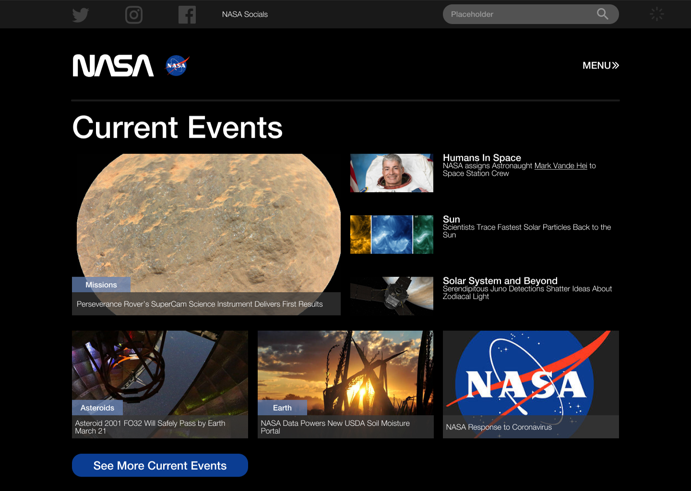
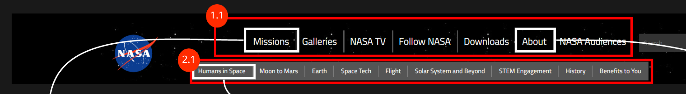
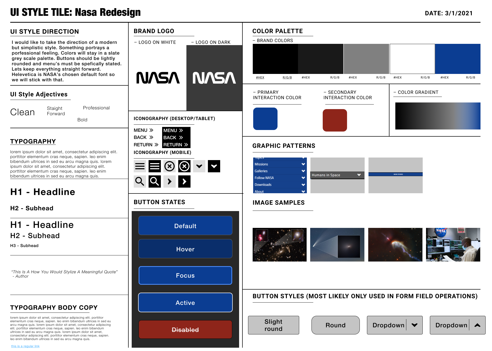
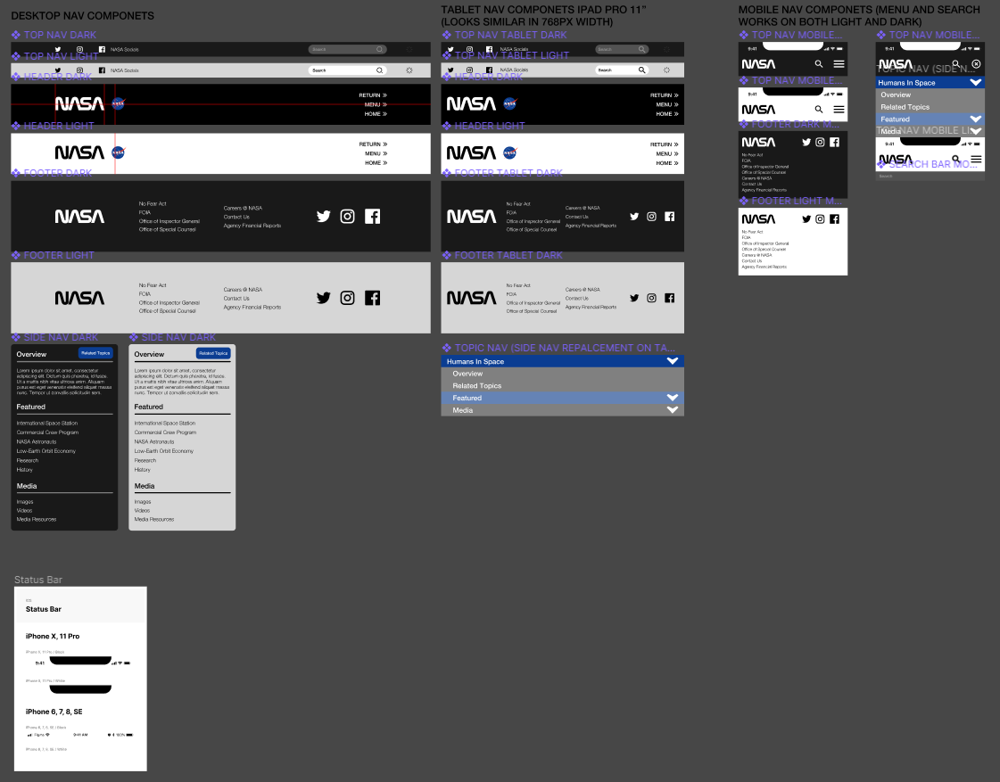

NASA Homepage Navigation Redesign - Nothing is Ever Perfect
UX/UI Case Study
Overview
NASA’s website was observed by our team to have an slight organizational problem. Our task at hand was to keep some of the NASA aspects and components from the existing site while building a new and more organized full screen navigation. There were several opportunities presented to us upon observation. For example, while the site had an acceptable dual navigation that matched titled content, nothing was sectioned off and instead, thrown into a grid style bulletin system. As a beginner UX/UI desinger, a redesign of NASA.gov was incredibly challenging. Making functionality additions seemed like it was was more of a nuisance for the user and instead taking away or simplifying the process made it easier to navigate the content.
Tools Used
Phase 1: Observations and Heuristics
Before conducting a heuristic analysis of NASA's current website, we needed to brainstorm a short persona that could tie in to our potential user base
Proto Persona
Name: Hank Parker
Behavioral Demographics:
- Lives in Tampa Bay, Florida
- Age: 26
- Studying Astrophysics and Aeronautical Engineering
- Barista (Just working this job to get by before graduating)
Goals and Needs On NASA's site
- Wants to be up to date on all current NASA news
- Wants a space news source that is trustworthy
- While studying Astrophysics and Aeronautical Engineering, Hank would like a place to share his thoughts with other scholars in the same field.
Pain Points and Potential Solutions
- Unsure if current space news is accurate and true
- Can't find a reliable chat / forum regarding space & NASA news
Possible User Path
Hank is currently studying Astrophysics and Aeronautical Engineering at the University of Tampa. His current studies consist of the science behind leaving and re-entering earth's atmosphere. During his search on the internet, he figures NASA will probably have some answers or articles to further enhance his knowledge on the subject. He ends up being confused where to look within NASA's site. Getting to the desired location on NASA’s website may have been troublesome but Hank finally made it to the “flight” topic section. It has several articles about Aeronautical Engineering but they were scattered about with no clear timestamps, which was really irritating.
Interview Takeaways
To see what regular people thought about the current website we had a select few navigate through it following 5 tasks. The tasks were created to match what our persona's possible navigation thought processes would be.
- Navigate to all Missions
- Find images within the fight category
- Find NASA's social media while navigating through the site
- Return to NASA's homepage from any current screen
- Use the search function to find or apply for an internship
While the users comepleted these simple tasks with many issues in mind, they instead went off track and pointed out other problems as well.
It helped to just let them talk and express themselves more than following a strict path.
Some examples :
- "Why is there a sub navigation? That could be in one thing itself. It draws more attention from the main navigation almost."
- "Viewing topic pages can get messy. I can click, click, click, move to new pages and such but I cant seem to find my way back within the page"
- "I assumed a way to apply for a career at NASA would be at the bottom of the page... And it's not there?"
- "If I wanted to listen to podcasts from NASA I'd have no idea where to go"
- "None of the articles are sorted. They only appear to have a topic attached to them but what is most recent?"
Heuristic Analysis
Lets look at the current features NASA presents on their webpage and attack problems with a user perspective.
1.1 Main Nav
Well aligned, but order of content seems a bit out of place and hard to follow. Where would Hank go to accomplish his goals here?
2.1 Sub Nav
Sub nav has no label on what the items are. So at first look, users have no idea what the content is.
This could be organized into a single tab called "topics" or another name within that matter.
1.2 Drop Down
A lot going on. Would be better if content is organized within drop down. Sorted by "Featured" Missions and "Explore" which features All Missons.
2.2 Topic Sub Nav
"Humans in Space" in navigation is kind of redundant. Instead we could use it for an H1 Heading.
Humans in space is also listed twice which seems very odd. A bigger title to let the user know what page they're on is clear focus.
The continuation of clicking on a topic needs to be more clear and concise. It feels like a user could get lost on where they are in the site
3.1 Sidebar
Sidebar is very busy, with unlabeled organization. Links to social media should be moved to footer allowing access to follow on all pages.
4.1 Footer
Footer should include social medias as well as a Career page.
Phase 2: Prototyping
Site Map
NASA's Navigation structure didn't need a complete overhaul. Only a few things needed compressing or changing. Examples being the sub navigation on the front page condensed into a tab called "topics", condensing all media related fields into a tab called "media", and adding a careers link in the footer of the site.
UI Style Tile
Component Creation
Early Design Decisions
A couple of things I wanted to focus on in the design:
- A Modular setup for articles on landing page. Opens up more space. (option is to instead fill the grid from end to end, which was later used due to requests during user testing).
- Later content and sections will be modular by 1x1, 1x2, 2x1, 2x2 squares. Each article will be clickable and lead to the same layout and setup for the page selected
- Navigation goes from left to right. It was hard to click through due to the way I prototyped it. Although, during 5 second testing with a few users, they easily could find what they were looking for. It was just hard for them to click out of the “folder like” navigation due to figma limitations.